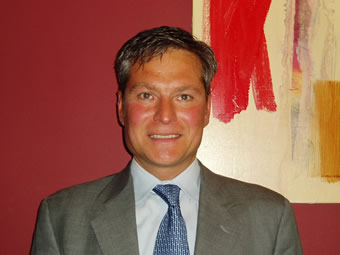
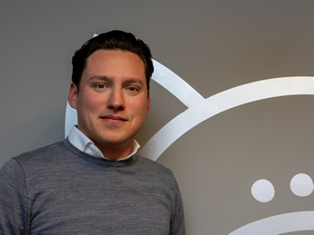
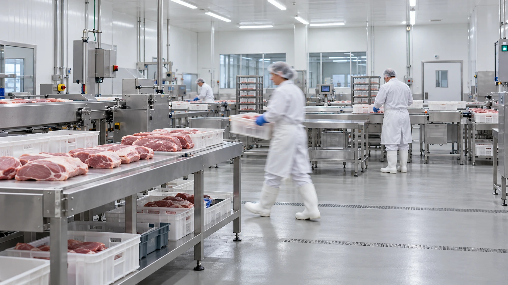
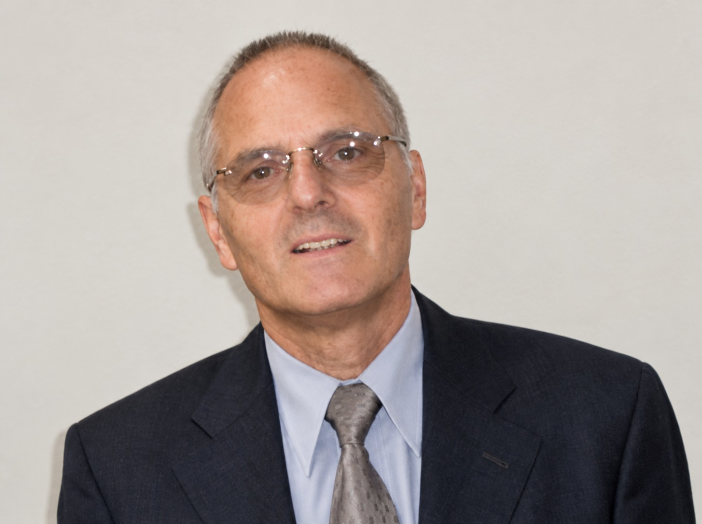
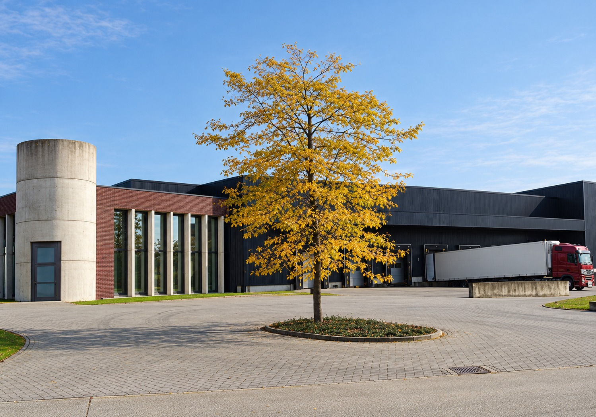

Directie en medewerkers
Vleesbedrijf P. Wils is gespecialiseerd in het uitbenen van varkenskoppen. Ons bedrijf, opgericht door Pierre Wils in 1957 en gevestigd te Grobbendonk, groeide van een lokale producent uit tot een belangrijke partner voor de vleesverwerkende industrie.

Eric Wils
Afgevaardigd bestuurder

Luca Wils
Bestuurder
Medewerkers
Onze medewerkers vormen een hecht team, dat dagelijks werkt aan kwaliteit en flexibiliteit. Iedere klant is voor ons belangrijk.
Werken bij Wils
Voor vragen over werken bij Wils kunt u terecht bij HR / secretariaat.
Contacteer HR / secretariaatProductie en vestiging
De sterke automatisering van ons productieproces en de in-line productie laten ons toe een economisch en kwalitatief product te leveren, met respect voor de strengste hygiënische normen.
We volgen nieuwe marktontwikkelingen en optimaliseren en moderniseren voortdurend onze producten en productieprocessen.
In 2025 verwerkten we ongeveer 14,6 miljoen kg verse varkenskoppen.

Grobbendonk
Sinds 1998 werken we vanuit onze fabriek op industrieterrein Klein Gent in Grobbendonk.
Infrastructuur
De infrastructuur omvat een vrieshuis met mobiele rekken.
Internationale afzet
We zijn een internationale servicegerichte onderneming en leveren wereldwijd aan de vleesverwerkende industrie.
Onze geschiedenis
Van de start in Antwerpen tot het familiebedrijf in Grobbendonk.
De start in Antwerpen
Pierre Wils startte zijn eigen bedrijf in vee, vlees en bijproducten te Antwerpen. De bedrijvigheid richtte zich voornamelijk op handel in slachtafvallen en uitbenen van rundskoppen.

Uitbenen van varkenskoppen
Pierre Wils startte bijkomend met het uitbenen van varkenskoppen.
Samenwerking met Fernandez-Turnez
Samenwerking met het bedrijf Fernandez-Turnez. De productiecapaciteit bedroeg +/- 80 Ton varkenskoppen/week en +/- 1.000 rundskoppen/week.
Overname en verhuizing naar Deurne
Overname Fernadez-Turnez. Verhuis naar nieuwe locatie te Deurne. Pierre Wils wordt bijgestaan door zijn zonen, Eric en Marc.
Een eerste uitbeenmachine
Aankoop semi-automatische uitbeenmachine voor varkenskoppen.
Een nieuwe fabriek in Grobbendonk
Verhuis naar nieuwe fabriek te Grobbendonk. Aankoop 2e semi-automatische uitbeenmachine voor varkenskoppen. Verhoging productiecapaciteit naar +/- 450 Ton varkenskoppen/week.

Installatie voor gedroogd petfood
Installatie voor gedroogd Petfood.
Overdracht van het bestuur
Overdracht bestuur aan Eric en Marc Wils.
Validatie van het autocontrolesysteem
Gevalideerd autocontrolesysteem (QA).
Certificering voor voedselveiligheid
Certificatie BRC Global Standard for Food Safety en certificatie autocontrolesysteem (QA).
Afscheid van Pierre Wils
Overlijden Pierre Wils 30.10.1935 - 28.05.2011
65 jaar Vleesbedrijf P. Wils
65 jarig bestaan Vleesbedrijf P. Wils.
Zonnepanelen
Op 1 februari 2026 meldt Wils de installatie van 692 zonnepanelen (449,80 kWp).
70-jarig bestaan
In 2027 viert Vleesbedrijf P. Wils zijn 70-jarig bestaan.
Nieuws.
Berichten over de mensen, investeringen en ontwikkelingen bij Vleesbedrijf P. Wils. Elk bericht beschrijft de situatie op de vermelde datum.
Peter De Bruycker met pensioen
After 26 rewarding years at Vleesbedrijf Wils, I will be closing an important chapter in my professional life as I retire on May 1st 2026.
I would like to sincerely thank all colleagues, customers, and suppliers for the trust, the pleasant collaborations, and the many valuable moments we have shared over the years. It has been a true privilege to be part of this journey and to build so many lasting relationships along the way.
The experiences, memories, and friendships I gained during this time will stay with me and are something I deeply appreciate.
As I step into this new phase of life, I do so with gratitude and many great memories.
Thank you all once again - and who knows, our paths may cross again!
Warm regards,
Peter
Certificaten IKB en Beter Leven
Vleesbedrijf P. Wils behaalt na de jaarlijkse audit de certificaten IKB en Beter Leven Kenmerk.
Actuele certificaatdocumentatie692 zonnepanelen geïnstalleerd
Met de installatie van 692 zonnepanelen (449,80 kWp) zetten we een belangrijke stap richting een duurzame en energie-efficiënte toekomst.
Deze investering in onze geschiedenisBRC AA+ en ACS na de jaarlijkse audit
Vleesbedrijf P. Wils behaalt na de jaarlijkse audit het certificaat BRC Global Standard for Food Safety grade AA+ en certificaat ACS autocontrolesystemen.
Actuele certificaatdocumentatie14,6 miljoen kilogram verwerkt in 2025
In 2025 verwerkte Vleesbedrijf P. Wils ongeveer 14,6 miljoen kilogram verse varkenskoppen.
Productie en vestiging65 jaar Vleesbedrijf P. Wils
Met gepaste trots melden wij het 65-jarig bestaan van Vleesbedrijf P. Wils.
De start in 1957